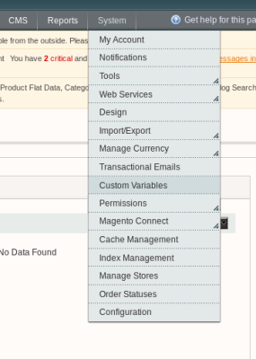
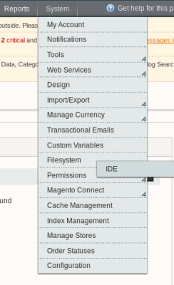
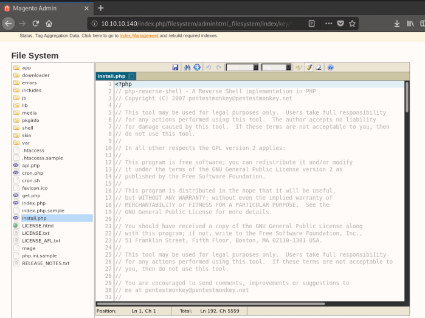

# Magento - Get a shell
I think there are multiple ways to get on a shell on Magento via the Admin panel.
Methods might also differ based version number and the type of Magento that's running (open-source Magento, e-commerce Magento, etc.)
## via the Filesystem Plugin
Examples:• Used in hackthebox SwagShop
• Video example here -
https://youtu.be/TBJowyKUEqE?t=362To get a shell via the Magento Admin Panel we need to modify a
.php file.
In order to modify a
.php file we need the
Filesystem plugin, which currently isn't installed.
### 1. Upload Filesystem plugin
1) Go to Magento Connect Manager -
http://10.10.10.140/downloader - and log in using admin credentials
2) Upload the filesystem plugin -
https://pluginarchive.com/magento/magpleasure_filesystem### Modify a .php file
3) Go to the Magento Admin Panel -
http://10.10.10.140/index.php/adminThe
Filesystem plugin should now be there.
4. Navigate to System tab > Filesystem > IDE
5) Pick a
.php file to edit and copy/paste in your reverse shell, replacing the code that's already there.
Make sure the file is publicly accessible (don't use index.php and ruin the box for others).
I chose
/install.php  6) Start a listener on your attacking machine
root@gotham:~/ctf/swagshop/80http/exploits# nc -lvnp 9001
listening on [any] 9001 ...
7) And access the
.php file you edited on the website to trigger your reverse shell.
In my case I visited -
http://10.10.10.140/install.php